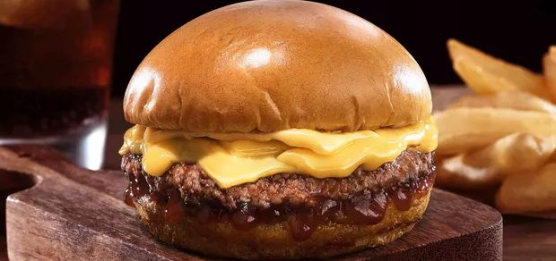

X-Burguer
In Portuguese the letter X has a "shees"sound, for that reason in Brazil "Cheese Burger" became "X-Burguer"

Burgers are one of the most popular snacks in Brazil; it is fast to cook, a cheap alternative, it doesn't require lots of money to build your own burger restaurant and for that you can find them almos anywhere.
At first the most popular version was a big sandwich with a processed premade burger patty, full of cheap ingredients; the focus was first on filling up and then the taste. Nowadays things have changed and you can find lots of different options depending on your taste.
So let's take a look of what you will need to prepare it:
- 1kg of ground knuckle (or other cut you prefer)
- 500g of ground pork leg (without the skin)
- 150g of ground bacon (also without the skin)
- Salt
- 1 egg
- Black Pepper
- Burger Buns
- Red Onions
- Tomato
- Lettuce
- Cheddar
Directions:
- Mix the 3 cuts of meat with the egg and then add the pepper and the salt to your taste
- Mold it into a flat circle portions at the size you prefer, but be careful not to let it too thin so it doesn't get too dry when you fry it
- Put it in the frying pan and leave it as you like most (in my opinion steak doneness past medium should be a crime, but to each their own)
- Mount your burger with the lettuce, tomato and red onions slices
- Take the beef out of the pan, put it on the bread, cheddar on top and a little of the meat juice afterwards
YOU ARE WELCOME!